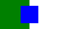

srcset
testcases for SVG
Canvas SVG without explicit dimensions - 2x
expected

actual
This test should show an SVG image drawn into a canvas. The canvas and image should look the same and both should be 100x50.